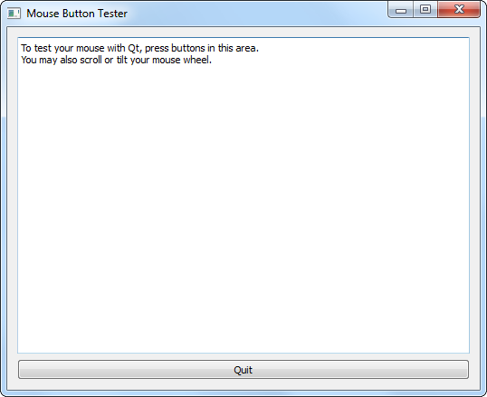

Mouse Button Tester
The 'Mouse Button Tester' example demonstrates how to reimplement mouse events within a custom class. You can also use this program to verify that Qt is actually receiving mouse events from your mouse.
Many 'gamer' mouse devices are configured with high-numbered "buttons" sending text shortcuts for certain games. With such a mouse, no mouse button events occur: The "mouse" sends keystrokes, and the 'Mouse Button Tester' Window will not see the event. Receiving no event, it will not repaint the Window with new text describing a button event.
And so, in addition to it's use as Qt example code, the program may be useful s a mouse device tester. Note that there is another example mouse buttons example which provides the same function, written in QML.
This program (the Widget-based example) consists of three classes, in addition to the main() parent program:
AQPushButton, "Quit".ButtonTester. This is derived from Qt's TextArea class, for purpose of customizing/re-implementing the mouse and wheel event member functions.Asimple QVBoxLayout layout.
First we will review the main program, with it's layout and "Quit" QPushButton. Then we will take a look at the ButtonTester class.
The Main Program
Note that the QPushButton, "Quit", is defined directly within the main() program, rather than another class. This is a correct way of defining a "Quit" QPushButton: A "Quit" Button defined inside another class would result in the destructor of that second class being called twice. This "Quit" Button uses the traditional Signal/Slot connection to invoke termination of the QApp, which will properly destroy its child classes before terminating itself.
The remainder of the main() program is concerned with defining the layout, and applying a minimum size to the customized ButtonTester.
ButtonTester Class Definition
The ButtonTester class inherits from QTextEdit, and listens for mouse events on all possible Qt::MouseButton values. It also listens for wheel events from the mouse, and indicates the direction of wheel motion ("up", down", "left", or "right"). It prints short debug messages into the Window, and also on the console QDebug() stream, when mouse button and wheel events occur. Our reimplementation of mousePressEvent(), mouseReleaseEvent(), mouseDoubleClickEvent(), and wheelEvent() "drive" the program; the other functions simply convert the Qt::MouseButton values into text strings.
You should call the ignore() function on any mouse event (or other event) which your widget-based classes do not use and consume. This function assures that Qt will propagate the event through each parent widget, until it is used or propagated to the Window Manager. (Qt attempts to do this automatically, but it is better programming practice to explicitly invoke the function.)
